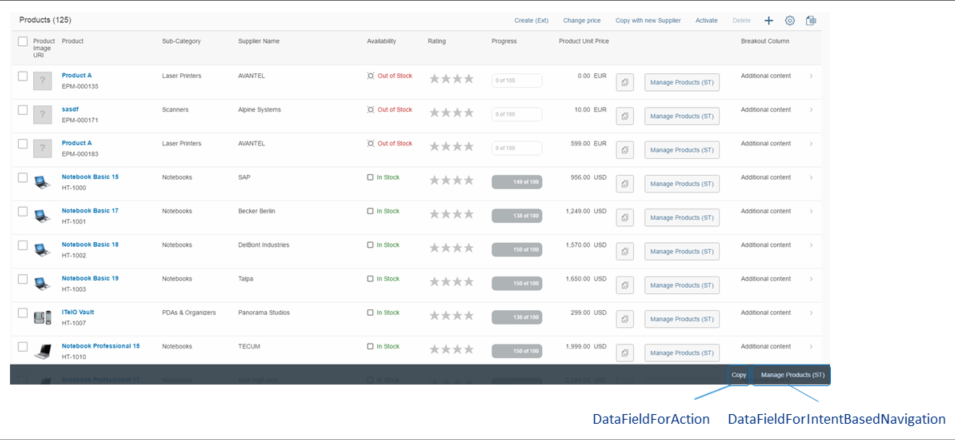

Please note that this feature is deprecated. SAP Fiori elements supports this feature only for compatibility reasons. We recommend you to avoid using determining actions in list reports.
Determining actions are used to trigger actions directly using the context of the table in the list report.
There are two types of determining actions:
Actions that trigger a back-end call through the OData service
(Function, FunctionImport,
Action, or ActionImport), represented
by the complex type DataFieldForAction
Actions that trigger intent-based navigation, represented by the complex type
DataFieldForIntentBasedNavigation
To add a determining action to the footer of the list report, use the annotation term
UI.LineItem and set the Determining property to
true for the complex type. This is displayed as shown below:

The following code sample shows an example of how to create your annotations for the determining actions in the list report:
<Annotation Term="UI.LineItem">
<Collection>
<Record Type="UI.DataFieldForAction">
<PropertyValue Property="Label" String="Copy with new Supplier"/>
<PropertyValue Property="Action"
String="STTA_PROD_MAN.STTA_PROD_MAN_Entities/
STTA_C_MP_ProductCopywithparams"/>
<PropertyValue Property="InvocationGrouping"
EnumMember="UI.OperationGroupingType/Isolated"/>
</Record>
<Record Type="UI.DataFieldForAction">
<PropertyValue Property="Label" String="Copy"/>
<PropertyValue Property="Action"
String="STTA_PROD_MAN.STTA_PROD_MAN_Entities/STTA_C_MP_ProductCopy"/>
<PropertyValue Property="Determining" Bool="true"/>
<PropertyValue Property="InvocationGrouping"
EnumMember="UI.OperationGroupingType/Isolated"/>
</Record>
<Record Type="UI.DataFieldForIntentBasedNavigation">
<PropertyValue Property="Label" String="Manage Products (ST)"/>
<PropertyValue Property="SemanticObject" String="EPMProduct"/>
<PropertyValue Property="Action" String="manage_st"/>
<PropertyValue Property="Determining" Bool="true"/>
</Record>
</Collection>
</Annotation>
The UI.LineItem vocabulary term is used to define the columns for
the smart table.
In the example above for the first record type, the DataFieldForAction
complex type does not contain the Determining property. Therefore, the
action button will appear in the smart table toolbar.
With the last two record types, the DataFieldForAction and
DataFieldForIntentBasedNavigation, complex types are used and
contain the Determining property, which is set to
true. This means the action buttons will appear in the footer.
Please note that this topic is currently only applicable to SAP Fiori elements for OData V2.